Never run a prompter before? Start here: what an operator does, and how to do it with Cadence Prompt.
These are the scripts you read on the prompter inside Cadence Prompt, shown as a page. In the app you press Play, read, and try each Your turn as you go. Practice is optional.
Never run a prompter before? This series is for you. It teaches the job first and the software with it.
You are reading this on a prompter, so you are already using one.
Where it says YOUR TURN, stop and try it. Practice is optional. Everything here is yours to try again.
The job
A teleprompter shows the presenter their words, one line at a time, on a glass in front of the camera or on the stage. The presenter reads them while looking at the room. You decide when the words move.
That is the whole job, and it is harder than it sounds.
Done well, nobody notices you. That is the goal.
The room
The presenter reads the glass. You watch the presenter, and your own screen. Your screen shows the same words, plus everything the presenter must never see: your cursor, your notes, your tools.
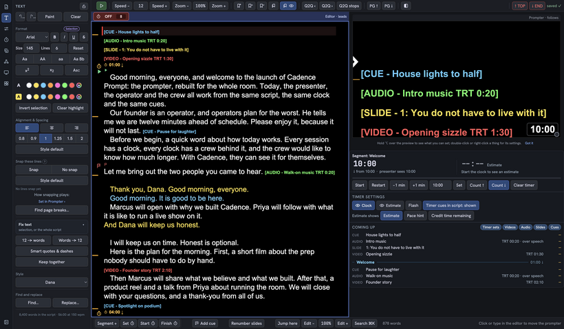
Behind you is a crew. A producer, a stage manager, a camera team, a sound operator, a graphics operator. They all work from the same script, and you are the one holding it.
Crew will ask you how long is left, and what is next. Cadence is built so you can tell them without guessing.
Words you will hear
The reading line is where the presenter's eyes rest. The marker shows where it is.
A cue is a mark in the script for the crew: a slide, a video, a sound, a moment.
A bookmark is a place you can hop back to.
A runlist puts several scripts in order, so one flows into the next.
A walk-through is the rehearsal where the presenter reads while you learn their pace.
Load-in is the early part of the day, when the crew builds the show.
Your turn Say each word out loud once. You will use them all.
What this series gives you
Ten short modules. How to scroll, how to follow, how to mark up words, how to get a script in, how to change it live. How to set up your display, how to use cues and the clock. How to get ready before doors, and what to do when something goes wrong.
At the end you run a short show of your own. By then the job should feel like yours.
Press to go to the next module. No deck? Press ⌘⌥] (Ctrl+Alt+]), or use the Next button in the Runlist drawer.
Module 2
Your first scroll
About 4-5 minutes
Start
Make me move. Press the Play button on the live bar, above the script. Press it again and I stop.
On a Stream Deck, it is this key:
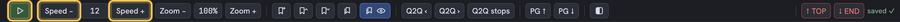
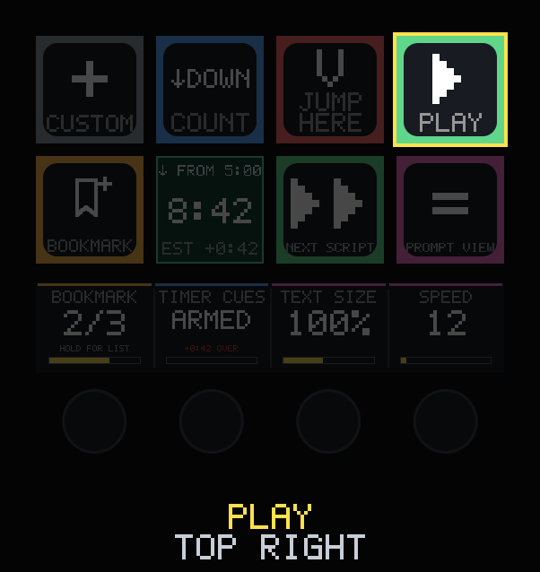
No deck? F2 does the same (on a Mac laptop, hold fn).
Your turn Start me, stop me, start me again.
Speed
Speed is the dial, or the plus and minus buttons.
Turn the Speed dial to the right and I get faster. Turn it to the left and I slow down.
Press it in and I stop.
No dial? F4 is faster and F3 is slower.
Two things to know. I ramp to a new speed, and I stay there. Turn back past zero and I run in reverse.
That is how you back up a few lines when the presenter does.
Your turn Crawl. Sprint. Stop. Go backward a few lines. Settle on a speed that feels like talking.
Ignore the rest
A deck has many keys. Today you need three things: Play, the Speed dial, and the Zoom keys. Everything else can wait.
You will be tempted to press everything. Go ahead. Nothing here can hurt the show you are not running yet.
Text size
The presenter is across the room. Make the words big enough for them, not for you.
Zoom is on the top bar: the Zoom minus and Zoom plus buttons around the percent.
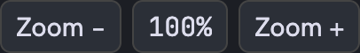
On a deck, the Text size dial.
Right makes them bigger. Left makes them smaller. Press it and they go back to normal.
No dial? F6 is bigger and F5 is smaller.
Your turn Make me too big, then too small, then just right.
The wheel
There is one more speed control, and you already own it. While I play, roll the mouse wheel or scroll with two fingers on the trackpad. I speed up, slow down, and ramp the same way.
Remember this one. You will want it on the day a cable lets you down.
Top and End
To go back to the beginning, press Top. Top and End are red words at the far end of the live bar.
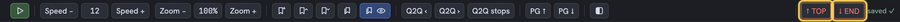
While I am playing, they take two presses. The first only moves your editor. The second takes the presenter there. That is on purpose: nobody should jump a presenter by accident.
No deck? F9 is Top.
Your turn Press Top twice. You are back where this module began.
Press for the next module.
Module 3
Following the presenter
About 5-6 minutes
The one rule
Follow the presenter. Do not lead them. The words move when they speak, not before.
Here is how. The last word they say passes the reading line, as they say it. Not early, not late.
The reading line is where their eyes rest. The marker at the edge of the screen shows it.
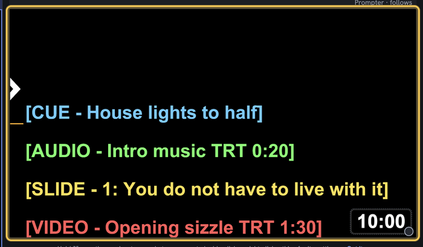
Early, and they race to keep up. Late, and they stop and look for their place. Neither one looks like a person talking.
Where to look
You have two places to look, and the presenter is the first. Listen to them. Watch where they are in the sentence.
Your own screen is the second. It shows what the presenter sees, so you know the words are where they should be.
Glance, do not stare. The more you look at the screen, the less you hear the speaker.
Your turn Read the next three lines aloud at your own pace. Pretend you are the presenter. Then set a speed that follows you.
Good evening, and thank you for coming.
Tonight we are going to talk about something that matters to every one of us.
Let me begin with a story.
Ramp, then hold
You do not drive the page with every press. You set a speed, and the page keeps it.
When the presenter speeds up, nudge the speed up. When they slow, nudge it down.
Small changes, early, and they never notice.
Big changes, late, and they notice everything.
Turn the speed to zero and I stay where I am, still in play. That is how you wait for an applause line.
Your turn Set a speed. Nudge it up two clicks. Nudge it down two. Take it to zero. Start again.
When they stop
Presenters pause. They wait for laughter, they take a breath, they look at a slide. You stop with them.
Press Pause, or take the speed to zero. Start again when they do.
Never chase. If they have slowed down, let the text wait for them.
Reading back
Sometimes the presenter says it again, or loses their place. Turn the speed past zero, and the words run in reverse.
Go back a line or two. Then go forward again at their pace.
A little back is easy. A lot back needs a bookmark, which comes later in this series.
Your turn Go forward ten lines, then back five, then forward again.
Press for the next module.
Module 4
Why we space and mark the words
About 5-6 minutes
The goal
Here is why a prompter script looks the way it does. We are not decorating. We are helping the presenter read so it does not sound like reading.
Every break, every color and every mark has a job. The job is to help them breathe, pause, and land each thought the right way.
Spread it out
A paragraph on a prompter is a wall. A presenter in a wall of words loses their place and flattens their voice.
So we put each sentence on its own line. We break after a clause, where a person would take a breath. We leave a gap where a new thought starts.
Read this next part twice, once in the wall and once spread out.
The committee met on Tuesday, reviewed the numbers, agreed that the quarter had gone well, and asked that the plan for the next quarter be ready by Friday.
The committee met on Tuesday, reviewed the numbers, agreed the quarter had gone well, and asked that the plan for next quarter be ready by Friday.
Your turn Read both versions aloud. Which one is easier to say well?
Where the breaks go
Break at the end of a sentence. Break at a comma that separates parts of a thought. Break after a colon, a semicolon or an ellipsis. Break in a list, one item to a line.
Do not break in the middle of a name or a number with its unit. Ten percent stays on one line. Dr. Smith stays together.
Cadence can do most of this for you, as you will see later in the series. Knowing why helps you check its work.
Marks that mean something
Color tells the presenter who is speaking, or that a line is not for them. Bold or underline tells them to lean on a word. A highlight says "this one matters".
Pick a few, and use them the same way every time. Marks only help if they mean one thing.
If everything is bold, nothing is.
Select some words, then click a color under Background in the Text drawer. The highlight shows on the prompter too.
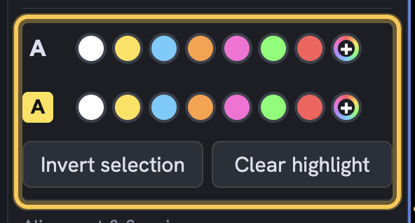
Invert selection makes words black on white, and again to put them back. Clear highlight takes the color off.
Your turn Highlight this line, then clear the highlight.
Names and hard words
If a name is hard to say, the presenter will say it wrong, or stop to think. Ask how it is said, and write it so they can read it. Cadence can show a respelling beside the word.
It is under Edit, then Pronunciations…. That comes later in this series.
Press for the next module.
Module 5
Getting your script in
About 4-5 minutes
The usual way
Most scripts reach you as a Word file by email. The writer is often the presenter. Others have edited it.
The first thing most people try is copy and paste. That works.
Paste
Copy the text in Word. Click in the editor where it goes. Paste.
The words arrive, and the script lays them out as a Cadence script. Word's fonts and colors stay behind, unless you choose the paste that keeps the source formatting.
Most of the time you do not want them. The prompter wants one clean look.
Your turn Copy a few lines from anywhere and paste them at the end of this script.
Open a file
To bring in a whole file, use File, then Import Script…. It reads Word, PowerPoint notes, PDF and more.
There is also Import & Prep…, which brings a file in and cleans it up in one go. That is the next series.
The file does not change. You get a new Cadence script, ready to edit.
Nothing in this script is touched.
Never edit the client's original. Always work on your copy.
Then what
A pasted script is raw. It may have long paragraphs, names in the middle of lines, notes that are not for the presenter.
Getting it ready is called prep. It can take more than half your time.
Cadence has tools that do most of it, and they are the next series, Prep Like a Pro. For now you can edit by hand.
Press for the next module.
Module 6
Edit on the fly
About 4-5 minutes
No edit mode
There is no edit mode. Click anywhere and type, even while I scroll.
A late change is just typing.
That matters. Scripts change on the day, sometimes during the show.
Below the line
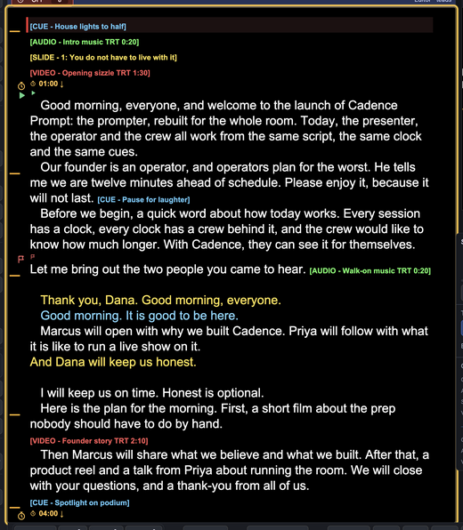
Edit below the reading line, and I do not jump. The presenter sees the change when I get there.
Edit above it, and you are changing words they have already read. Do not.
Your turn Press Play. Click on a line below the marker and change one word while I scroll.
Jump here
Sometimes you need to take the presenter to a place. Click on that line, then press Jump here.
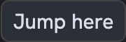
On a deck, it is this key:
The prompter goes to your cursor.
No deck? Jump here is in the Play menu, and ⌘⌥Enter (Ctrl+Alt+Enter) does the same.
Your turn Click on a line near the end of this module, then press Jump here. Then press Top twice to come back.
Clients like to watch
When the presenter workshops a line, they like to see it change. Zoom the editor out to see a whole paragraph, make the change, and zoom back.
The Editor zoom changes your screen only. The text the presenter sees does not change.
On the top bar, it is the Zoom buttons for the prompter. The editor's zoom is ⌘− and ⌘+ (Ctrl+− and Ctrl++).
The changes you cannot see
A client sends a new version of the whole script. You have to find every change, and you cannot miss one.
Cadence has tools for this, in the next series. They show what the client changed, what you changed, and what you both did.
Until then: never paste over a script without keeping a copy.
Press for the next module.
Module 7
Your display and rig
About 4-5 minutes
Two pictures
Your screen and the presenter's glass can show the same picture or two different ones. That depends on your rig.
Open the Show drawer and look at Display mode. Click it, and the drawer opens with the control lit.
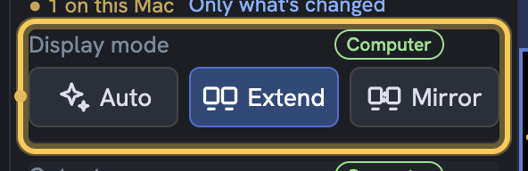
Mirrored is one picture on two screens, or one screen. Press the View key and this window becomes the prompter, full screen. Press it again and you are back in the editor.
Extended is two different pictures. The second screen is already the prompter.
Auto picks for you.
No deck? F1 is the View key.
Your turn Press View, look around, press it again. Esc also brings you back.
The glass
A prompter glass reflects a screen. A mirror in the path can turn the words backward.
In the Show drawer, under Output, Mirror turns the picture left to right. Flip turns it upside down.
They change only the presenter's screen. Your editor stays the right way round.
The prompter is read-only while mirrored or flipped, so type in the editor.
If the words are backward on the glass, you want Mirror. Check it before the presenter does.
Your turn Turn Mirror on, look at the prompter, then turn it off.
Invert
Some rooms want dark words on a white page.
Invert does that. It is on the top bar, and F10 does the same.
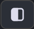
With words selected it inverts only those words. With nothing selected it inverts the whole display.
Your turn Invert the display, then put it back.
Where their eyes go
Eyes rest at the reading line. It starts about a third of the way down.
Some presenters like it higher, some lower. The Prompter drawer has Reading line, with up and down buttons. F7 and F8 move it too.
Ask them in the walk-through. Then leave it alone.
Your turn Move the reading line up and down, then put it back.
Press for the next module.
Module 8
Cues and the clock
About 5-6 minutes
Cues
A cue is a mark in the script for the crew, not the presenter. A slide, a video, a sound, a moment.
Cues are just as much for the crew as they are for the talent.
Cue - a plain cue for the crew
Video - a clip, with its running time
Slide - a slide number
Audio - a sound
Press the Custom key on a Stream Deck. The Add cue dialog opens. Give the cue a name and a description.
No deck? Use the Add cue button in the Prepare drawer, or ⌘⌥K (Ctrl+Alt+K).
Your turn Click after this line, add a custom cue called HELLO, and put it in.
The clock
The cue at the top of this module set a clock. The cue under it started the clock.
TIMER SET means the time to count from. TIMER START starts it, and TIMER FINISH stops it.
The presenter sees how long they have left. You see it too.
The Timer key starts and pauses it. The Count key swaps counting down and counting up.
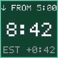
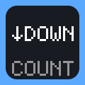
No deck? ⌘⌥T starts and pauses.
Your turn Pause the clock, then start it again.
Let it run itself
You do not have to press the clock yourself. Press Play, and the timer cues are armed. An armed Start cue starts the clock as you pass it. An armed Finish cue stops it.
Press Pause, and they are disarmed.
The strip above the editor tells you which: Armed, or Off.
Look at it before every show.
Telling the crew
Crew will ask how much longer. The clock tells you.
Cadence can also put the cues in front of the crew, so they do not ask. That is in the third series.
Press for the next module.
Module 9
Before doors
About 4-5 minutes
The routine
Doors open, and you want nothing left to chance. A short routine, the same every time, is how you do that.
Do it in this order. Script, display, test, talent, backup.
The script
Open the right script. Check the title, and check the date or version.
A presenter's greatest fear is that you do not have their script, or that it is the wrong one. Open it before they walk in.
Read the first line and the last line. They should match what the producer gave you.
Your turn Look at the title of this script. Read its first and last line aloud.
The display
Check that the prompter shows what you think it shows. Mirror and Flip are right for the glass. The text is big enough for where the talent will stand.
The Show drawer has a checklist, Before you go live.
It turns off the pop-ups and notifications that must never cross the prompter, and keeps the display awake.
Your turn Open the Show drawer and find Before you go live.
The test
Scroll a few lines at a normal speed. Stop. Go back. Start.
Try the controls you will use. A deck key, a dial, the mouse wheel.
The time to find a loose cable is now.
The talent
If you can, read a minute of the script with the presenter. Ask where they want the reading line. Ask how big the words should be, and how fast they read.
Watch them read. You will learn their pace better in one minute than in any rule.
The backup
Keep a copy of the script that is not on your laptop. Cadence also keeps backups, and Versions, so you can go back.
Know where the backup computer is, and how long it takes to switch.
The best operators are the ones who are over-prepared.
Press for the next module.
Module 10
When things go wrong
About 6-7 minutes
Stay calm
Something will go wrong. It happens to everyone who runs a show long enough.
Your job then is not to fix everything. It is to keep the presenter reading.
Nobody remembers the glitch. They remember whether it was handled.
The presenter goes off script
Presenters ad-lib. They skip a page, or they skip to a different place.
Do not chase them. Stop where you are. Listen for a line you recognize.
Read ahead in the editor, which shows more than the glass. Find where they landed, or a place they can get back on script.
Click on that line and press Jump here. The prompter goes to your cursor.
Bookmarks help here too. Hop to the next section by name.
Your turn Click on a line in the next chapter and press Jump here. Then press Top twice to come back.
The hardware drops
A deck loses its connection, or a hand control stops. The prompter may keep running at the speed it had.
Do not panic. Take the mouse wheel, or two fingers on the trackpad, and the speed is yours. The Speed buttons on the live bar work too.
To stop fast, take the speed to zero, or press Pause.
Mouse wheel, two fingers, buttons. Say it to yourself now.
Your turn Press Play. Stop me with the mouse wheel. Then start me and stop me with the Speed buttons.
The computer fails
The worst case is the computer. A backup computer with the same script is the answer.
Know before doors how you will switch. Who does it, which cable, how long.
Cadence keeps backups and versions of your scripts. File, then Versions… lets you put an earlier one back.
When it still goes wrong
Press Mark That Moment in the Help menu as it happens. It marks the time, so a report later can find the cause.
Afterwards, use Help, then Report a Problem. It is how this software gets better.
Your first show
You have everything now. Next is Show-Ready, a short show of your own, with a checklist at the end. Find it in Help, then Learn: Show-Ready.
You were reading this on a prompter the whole time. Welcome to the job.
 to go to the next module.
to go to the next module.